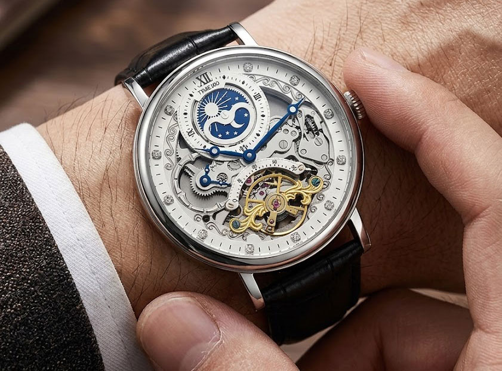
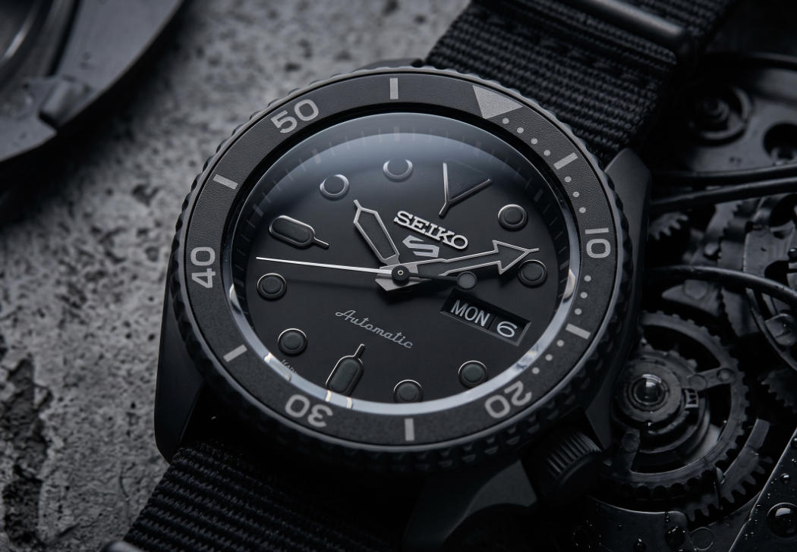
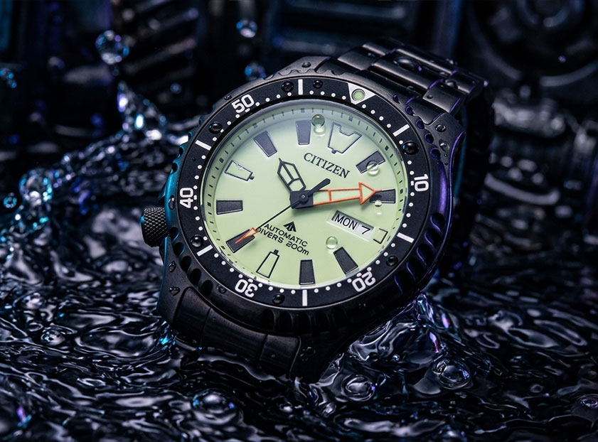
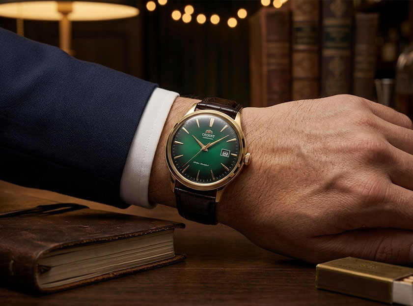
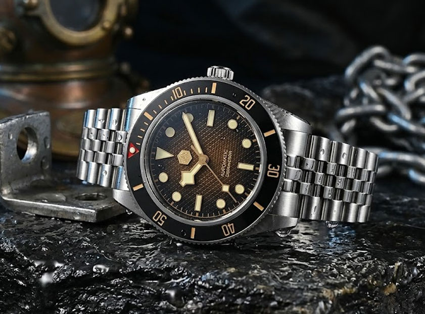
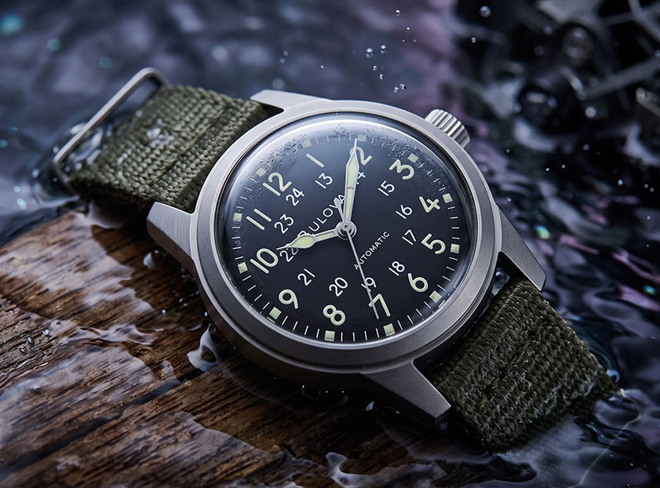
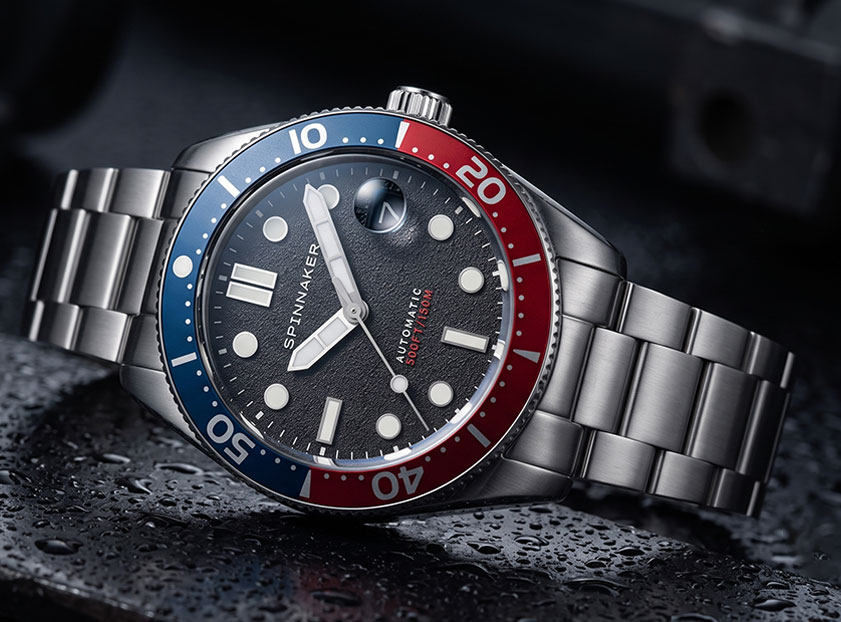
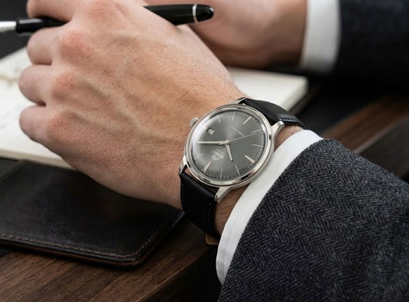

The Beginner Watch Matrix: 10 Best Mechanical Watches Reviewed
Stepping into the world of horology can feel like a minefield of overhyped fashion quartz junk. A true mechanical watch is an intricate micro-engine powered entirely by springs, gears, and kinetic physics. For anyone looking for the best automatic watch under $200 or entering the premium entry-luxury bracket, you deserve real metrics—not recycled marketing brochures.
In this definitive 2026 matrix, we break down 10 exceptional affordable mechanical watches from 10 distinct brands. We evaluate their baseline technical specs, outline exactly who they are for, and address real-world manufacturing trade-offs to completely eliminate your buying anxiety before you hit checkout.
01 TIME100 "Flying Meteor" Skeleton Automatic

| Technical Specifications | |
|---|---|
| Movement Architecture | Heavy-Duty Open-Heart Automatic Caliber Architecture |
| Case Diameter / Dimension | 40mm Sculpted Cyberpunk Interstellar Framework |
| Crystal Type | Impact-Resistant Curved Hardened Mineral Lens |
| Water Resistance Depth | 30 Meters (3 ATM Urban Everyday Level Protection) |
A visual explosion of modern industrial artwork. The TIME100 Flying Meteor abandons standard flat watch faces in favor of a full open-heart skeletal architecture. It allows you to watch the pure mechanical heartbeat—the balance wheel spinning, gears locking, and mainspring uncoiling—right through the front crystal. Wrapped in a rugged cyberpunk outer framework, it delivers a high-end independent aesthetic at an entry-level price point.
Target Audience (Who It Is For)02 Orient Kamasu Automatic Diver (RA-AA0001B19B)

| Technical Specifications | |
|---|---|
| Movement Architecture | In-House Orient Caliber F6922 (Japanese Automatic) |
| Case Diameter / Dimension | 41.8mm Sharp Aggressive Profile |
| Crystal Type | Premium Scratch-Proof Synthetic Sapphire Crystal |
| Water Resistance Depth | 200 Meters (20 ATM ISO-Inspired Dive Spec) |
Named after the aggressive barracuda fish, the Orient Kamasu shatters expectations by introducing a premium, un-scratchable sapphire crystal—a luxury feature virtually unheard of at this aggressive price bracket. Boasting an authentic 200-meter water resistance with a secure screw-down crown, its deep sunburst dial is guarded by ultra-sharp, tooth-like indices that emit a ferocious torch-like glow in pitch darkness.
Target Audience (Who It Is For)03 Seiko 5 Sports "Blackout" Custom Mod (NH36)

| Technical Specifications | |
|---|---|
| Movement Architecture | Upgraded Japanese NH36 Automatic (Hacking & Hand-Winding) |
| Case Diameter / Dimension | 42.5mm (Stealth Matte Black PVD Coating) |
| Crystal Type | Upgraded Double-Domed Sapphire Crystal with Anti-Reflective Coating |
| Water Resistance Depth | 100 Meters (10 ATM Swimming Spec) |
While the factory Seiko SRPD series is legendary, the custom watch community has taken it to a whole new level. Our featured Seiko 5 Blackout Mod drops the standard day/date wheel for a custom build driven by the bulletproof Seiko NH36 movement. Cloaked entirely in a stealthy matte black PVD case and paired with a tactical strap, it offers a high-end custom aesthetic reminiscent of luxury ceramic timepieces at a fraction of the cost.
Target Audience (Who It Is For)04 Citizen Promaster Automatic Marine (NY0040-09E)

| Technical Specifications | |
|---|---|
| Movement Architecture | Citizen-Miyota 8203 Heavy-Duty Automatic |
| Case Diameter / Dimension | 42mm Mil-Spec Tactical Layout |
| Crystal Type | Thick Shatter-Proof Mineral Crystal Glass |
| Water Resistance Depth | 200 Meters (20 ATM Certified ISO 6425 Diver) |
An absolute military legend. Officially adopted by the elite Marina Militare (Italian Navy) for deep-sea operations, the Citizen NY0040 is a certified ISO 6425 dive watch built for warfare. Its signature left-hand "Lefty" crown positioned at 8 o'clock prevents the metal from digging into your wrist during intense physical activity, while its ultra-coarse "underwater-grip" bezel ensures perfect control even under heavy diving gloves.
Target Audience (Who It Is For)05 Orient Bambino Version 4 Dress Watch

| Technical Specifications | |
|---|---|
| Movement Architecture | In-House Japanese Orient Cal. F6724 Automatic |
| Case Diameter / Dimension | 42mm Slim Dress Geometry |
| Crystal Type | Vintage High-Domed Toughened Mineral Lens |
| Water Resistance Depth | 30 Meters (3 ATM Splash-Proof) |
When it comes to affordable mechanical watches for formal environments, the Bambino is the global king. Version 4 masters the retro-modern dress aesthetic with a breathtaking sunburst gradient dial and a high-domed crystal that curves elegantly at the edges, flawlessly replicating 1960s luxury Swiss dress styling cues.
Target Audience (Who It Is For)06 Timex Marlin Automatic
| Technical Specifications | |
|---|---|
| Movement Architecture | Miyota 8-Series Premium Automatic Self-Wind |
| Case Diameter / Dimension | 40mm Case with Ultra-Thin Visual Impression |
| Crystal Type | Vintage Curved Acrylic Hesalite Lens |
| Water Resistance Depth | 30 Meters (3 ATM Casual Splashes) |
The Timex Marlin Automatic is a literal time capsule from the 1960s. It flawlessly captures the mid-century modern minimalist aesthetic that made the original hand-wound Marlin a design icon. This modern iteration wraps a smooth Japanese Miyota automatic engine inside a highly polished 40mm case. It features a stunning 'sunburst' gradient dial and a heavily domed acrylic crystal that mesmerizingly distorts light at its edges—delivering high-end vintage charisma at an unbeatable value.
Target Audience (Who It Is For)07 San Martin Vintage Diver (SN0128 BB58)

| Technical Specifications | |
|---|---|
| Movement Architecture | Japanese Seiko NH35 Automatic (24 Jewels) |
| Case Diameter / Dimension | 40mm (The Ultimate Vintage BB58 Sweet Spot) |
| Crystal Type | Top-Tier High Hat Box Sapphire with Inner AR Coating |
| Water Resistance Depth | 200 Meters (20 ATM Screw-Down System) |
San Martin has single-handedly redefined what "microbrand quality" means. The SN0128 features a breathtaking waffle-textured gradient dial that shifts hypnotically under direct lighting. Flawlessly paying homage to the historic BB58 silhouette, it brings a level of case finishing—with razor-sharp brushed facets and mirror-polished bevels—that genuinely rivals Swiss luxury timepieces costing four times the price.
Target Audience (Who It Is For)08 Bulova Military Hack Automatic

| Technical Specifications | |
|---|---|
| Movement Architecture | Miyota 82S0 Automatic with True Hacking Seconds |
| Case Diameter / Dimension | 38mm Classic WWII Infantry Dimension |
| Crystal Type | Double-Domed Hardened Mineral Lens |
| Water Resistance Depth | 30 Meters (3 ATM Tactical Field Splash) |
The Bulova Military Hack is a brilliant revival of the classic navigation timepieces issued to Allied infantrymen during World War II. Its defining characteristic is tactical minimalism: featuring a highly legible matte black dial with dual-layer 12/24 hour tracks and distinct luminous cathedral hands. Enclosed in a bead-blasted anti-reflective 38mm steel case and paired with a rugged olive green canvas strap, this mechanical watch delivers uncompromised military utility and rich historical pedigree.
Target Audience (Who It Is For)09 Spinnaker Croft Automatic

| Technical Specifications | |
|---|---|
| Movement Architecture | Miyota 21-Jewel Heavy-Duty Automatic |
| Case Diameter / Dimension | 40mm Bold Stance Case Geometry |
| Crystal Type | Scratch-Resistant Sapphire Lens with Integrated Cyclops |
| Water Resistance Depth | 150 Meters (15 ATM Professional Marine Spec) |
Spinnaker specializes in bold marine artistry. The Croft stands out immediately with its iconic blue-and-red Pepsi bezel and its signature heavy-granule textured matte dial plate that mimics rugged maritime equipment. Featuring a subtle magnifying cyclops window over the date indicator and premium oversized indices, it provides an exceptional boutique luxury dive footprint with an open exhibition window on the rear.
Target Audience (Who It Is For)10 Orient Bambino Version 3 Automatic

| Technical Specifications | |
|---|---|
| Movement Architecture | In-House Orient Caliber F6724 (Automatic, Hand-Winding, Hacking) |
| Case Diameter / Dimension | 40.5mm Slim Bauhaus Profile Geometry |
| Crystal Type | Vintage Heavily Domed Mineral Crystal Lens |
| Water Resistance Depth | 30 Meters (3 ATM Executive Splash Resistant) |
When it comes to pure mid-century modern minimalism, the Orient Bambino Version 3 is an absolute masterclass in restraint. It strips away all traditional hour numerals, leaving behind only razor-thin silver baton hands and sharp, clean linear indices. What elevates this timepiece into a work of art is its stunning metallic sunburst smoke-grey dial, encased beneath a heavily domed mineral crystal that mesmerizingly distorts light at the perimeter—delivering high-end independent executive character at an unbeatable entry-level price point.
Target Audience (Who It Is For)